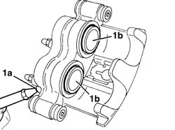
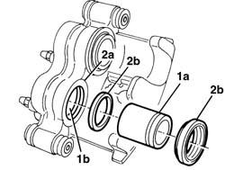
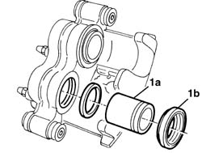

3310A38 FRONT BRAKE CALIPER, REMOVED (ONE) L/H OR R/H - OVERHAUL
- Path
- Procedures > 33 BRAKING SYSTEM > 3310 DISC BRAKES > 3310A FRONT DISC BRAKES > 3310A38 FRONT BRAKE CALIPER, REMOVED (ONE) L/H OR R/H - OVERHAUL
- Kind
- repair procedure (removal / refitting; the operation number is the code)
- Applies to
- all engines; all production periods
- Interactive page
- https://sloeber94.github.io/elrnDB-fDct/en/#/244001080
Applies to: all engines; all production periods
 Removing
Removing
 Refitting
Refitting1. Direct a jet of compressed air into the brake fluid inlet port (1a) to remove the small piston (1b) from the caliper casing, inserting a spacer between the piston and the reaction lug to prevent the small pistons from coming out completely.

Applies to: all engines; all production periods
1. The pistons (1a) and the caliper casing (1b) should not show signs of abrasion or seizing or else the caliper complete with pistons has to be replaced.
2. In any case the protective boot (2a) and the seals (2b) always have to be replaced.

Applies to: all engines; all production periods
Refitting
Removing- After having lubricated the new seals with the grease supplied in the spares kit, fit them in the seats in the caliper unit.
1. Before fitting the piston (1a) in the caliper casing, position the protective boot (1b) in the housing in the caliper casing. Insert the piston gradually, taking care not to damage to the protective boot or the seal.
- Make sure that the protective boot is correctly fitted on the housing in the piston.
- Allow any air trapped under the dust boots to escape.
- Lubricate the parts concerned with brake fluid before the definitive fitting.

Applies to: all engines; all production periods
- Check that the brakes are working.